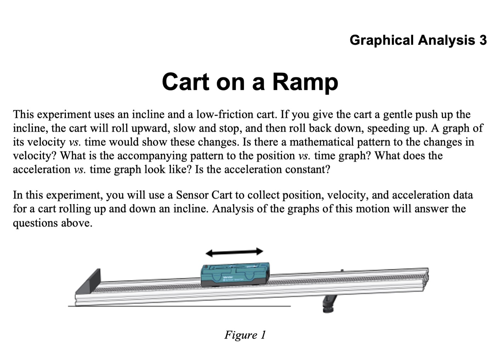

Carts, a sonar motion sensor, and the mess of groups troubleshooting their own equipment on the way to reading how something moves straight off a graph.
I put students in groups of three or four around a Vernier cart-and-track station. I introduce the LabQuest, Graphical Analysis, the cart, and the motion sensor before anyone starts collecting data. I explain that the sensor uses sonar, sending out a sound pulse and using the returning signal to determine position. I also show them its range and effective detection region. I do not begin with the software running or a model of what a "good" graph should look like.
Students first have some freedom to move the cart by hand, watch the live readouts, and understand what zeroing the sensor means. Then we begin the Vernier Cart on a Ramp activity, but we work through the guide together. I stop the class at different points, we discuss what is happening, and then the groups continue. They run the cart and generate position-, velocity-, and acceleration-time graphs. Toward the end, we connect those graphs to mathematical models in Graphical Analysis.
These classes are a mess. Sensors stop working, equipment needs to be reset, and every group runs into a different problem at a different time. While I help one group, another is confused about something else. Students move equipment, watch graphs, troubleshoot, and sometimes write very little down. That mess is part of the experience: they watch the cart move while seeing the same motion appear on a graph. The central point is how the cart moves, not why. Students want to jump to forces or energy, but this lesson is descriptive. They need to connect the physical motion to its graphical representation before explaining its cause.
